SpecInfer：通过树状 speculative inference 与验证加速大语言模型服务
Xupeng Miao*：Carnegie Mellon University，美国宾夕法尼亚州匹兹堡；xupeng@cmu.edu。
Gabriele Oliaro*：Carnegie Mellon University，美国宾夕法尼亚州匹兹堡；goliaro@cs.cmu.edu。
Zhihao Zhang*：Carnegie Mellon University，美国宾夕法尼亚州匹兹堡；zhihaoz3@andrew.cmu.edu。
Xinhao Cheng*：Carnegie Mellon University，美国宾夕法尼亚州匹兹堡；xinhaoc@andrew.cmu.edu。
Zeyu Wang：Carnegie Mellon University，美国宾夕法尼亚州匹兹堡；zeyuwang@alumni.cmu.edu。
Zhengxin Zhang：清华大学，中国北京；zhang-zx21@mails.tsinghua.edu.cn。
Rae Ying Yee Wong：Stanford University，美国加利福尼亚州斯坦福；raewong@stanford.edu。
Alan Zhu：Carnegie Mellon University，美国宾夕法尼亚州匹兹堡；aczhu@andrew.cmu.edu。
Lijie Yang：Carnegie Mellon University，美国宾夕法尼亚州匹兹堡；lijiey@andrew.cmu.edu。
Xiaoxiang Shi：上海交通大学，中国上海；lambda7shi@sjtu.edu.cn。
Chunan Shi：北京大学，中国北京；spirited_away@pku.edu.cn。
Zhuoming Chen：Carnegie Mellon University，美国宾夕法尼亚州匹兹堡；zhuominc@andrew.cmu.edu。
Daiyaan Arfeen：Carnegie Mellon University，美国宾夕法尼亚州匹兹堡；marfeen@andrew.cmu.edu。
Reyna Abhyankar：University of California, San Diego，美国加利福尼亚州圣迭戈；vabhyank@ucsd.edu。
Zhihao Jia：Carnegie Mellon University，美国宾夕法尼亚州匹兹堡；zhihao@cmu.edu。
摘要
本文介绍 SpecInfer，一个通过树状 speculative inference 与验证来加速生成式大语言模型（LLM）服务的系统。SpecInfer 的核心思想是利用小型推测模型预测 LLM 的输出；这些预测被组织成一棵 token 树，其中每个节点都代表一个候选 token 序列。借助一种新的树状并行 decoding 机制，token 树所表示的所有候选 token 序列的正确性都会相对于 LLM 并行验证。SpecInfer 将 LLM 用作 token 树验证器，而非增量 decoder，这显著降低了提供生成式 LLM 服务时的端到端延迟与计算需求，同时能够从理论上保证模型质量不变。评估表明，在保持相同生成性能的同时，SpecInfer 在分布式 LLM 推理中相对于现有 LLM 服务系统实现了 1.5–2.8× 加速，在基于卸载的 LLM 推理中实现了 2.6–3.5× 加速。SpecInfer 已公开发布于 https://github.com/flexflow/FlexFlow/。
关键词：大语言模型服务、speculative decoding、token 树验证。
ACM 引用格式
Xupeng Miao, Gabriele Oliaro, Zhihao Zhang, Xinhao Cheng, Zeyu Wang, Zhengxin Zhang, Rae Ying Yee Wong, Alan Zhu, Lijie Yang, Xiaoxiang Shi, Chunan Shi, Zhuoming Chen, Daiyaan Arfeen, Reyna Abhyankar, and Zhihao Jia. 2024. SpecInfer：通过树状 speculative inference 与验证加速大语言模型服务。载于第 29 届 ACM International Conference on Architectural Support for Programming Languages and Operating Systems，第 3 卷（ASPLOS ’24），2024 年 4 月 27 日至 5 月 1 日，美国加利福尼亚州 La Jolla。ACM，美国纽约，18 页。https://doi.org/10.1145/3620666.3651335。
1 引言
ChatGPT [3] 和 GPT-4 [33] 等生成式大语言模型（LLM）已被证明在问答、程序合成、任务自动化等诸多应用领域具有强大能力 [26, 56]。然而，要快速且低成本地提供这些 LLM 的服务仍然很困难，（接下页）
* 同等贡献。
允许为个人或课堂用途免费制作本文全部或部分内容的数字或纸质副本，前提是这些副本不用于或不分发用于盈利或商业利益，并且在首页保留本声明和完整引用。必须尊重本文中第三方组件的版权。其他用途请联系所有者／作者。
ASPLOS ’24，2024 年 4 月 27 日至 5 月 1 日，美国加利福尼亚州 La Jolla。© 2024 版权由所有者／作者持有。ACM ISBN 979-8-4007-0386-7/24/04。https://doi.org/10.1145/3620666.3651335。arXiv:2305.09781v4 [cs.CL]，2024 年 4 月 1 日。
本页原文链接
- https://orcid.org/0000-0001-5406-0736
- https://orcid.org/0000-0002-1270-5185
- https://orcid.org/0000-0002-9371-8358
- https://orcid.org/0000-0003-1578-2597
- https://orcid.org/0009-0000-6840-4691
- https://orcid.org/0009-0001-8694-9246
- https://orcid.org/0009-0002-5756-2744
- https://orcid.org/0009-0002-8409-2717
- https://orcid.org/0009-0004-7909-5416
- https://orcid.org/0009-0005-6763-0108
- https://orcid.org/0009-0006-7797-573X
- https://orcid.org/0009-0008-2677-0659
- https://orcid.org/0009-0009-3375-497X
- https://orcid.org/0009-0009-5626-4551
- https://orcid.org/0009-0009-7197-4965
（接上页）原因在于它们参数规模庞大、架构复杂、计算需求很高。例如，最大的 GPT-3 架构拥有 1750 亿个参数，即使以半精度浮点数存储，也需要八块以上的 NVIDIA 40GB A100 GPU，而处理单次推理请求则需要数秒 [3]。
LLM 通常以一个称为 prompt 的 token 序列作为输入，随后每次生成一个 token，如图 1a 所示。序列中每个 token 的生成都以输入 prompt 和先前已生成的 token 为条件，不考虑未来 token。这种方法也称为自回归 decoding，因为每个生成的 token 也会作为生成未来 token 的输入。这种 token 间的依赖关系对于许多需要保留所生成 token 的顺序和上下文的 NLP 任务至关重要，例如文本补全 [55]。
现有 LLM 系统通常采用增量 decoding 来处理请求：系统先在一个步骤中计算所有 prompt token 的激活，随后利用输入 prompt 和此前生成的全部 token，迭代地 decoding 出一个新 token [27]。这种方法遵循 token 之间的数据依赖关系，但由于增量阶段每个请求内部的并行程度受到很大限制，其运行性能并不理想，GPU 利用率也有限。此外，Transformer [48] 的 attention 机制需要访问先前所有 token 的 key 和 value，才能计算新 token 的 attention 输出。为避免重新计算此前所有 token 的 key 和 value，如今的 LLM 系统采用缓存机制，存储这些 key 和 value，以供后续迭代复用。对于长序列生成任务（例如，GPT-4 单个请求最多支持 32K 个 token），缓存 key 和 value 会引入显著的内存开销。由于需要缓存这些请求的 key 和 value，现有系统无法并行服务大量请求。
受到处理器优化中的推测执行思想 [13, 42] 启发，近期工作提出了基于序列的 speculative inference：利用小型推测模型（SSM）生成一个 token 序列，再使用 LLM 并行检查其正确性 [5, 22, 25, 44, 51]。这些尝试仅考虑单个 SSM 生成的一条 token 序列来进行推测，由于两者的模型容量存在差距，这种推测很难与 LLM 良好对齐；为了保持较低的内存和运行开销，SSM 的规模通常比 LLM 小若干个数量级。
本文介绍 SpecInfer，一个通过树状 speculative inference 与验证来改善 LLM 服务端到端延迟和计算效率的系统。图 1b 对比了现有的增量 decoding、基于序列的 speculative inference，以及我们的树状 speculative inference。SpecInfer 的关键见解是同时考虑多样化的推测候选，而不是像现有方法那样只考虑一个，从而最大限度地提高推测性能。这些候选被组织成 token 树，树中每个节点都表示一个推测 token 序列。所有候选 token 序列的正确性都相对于 LLM 并行验证，使 SpecInfer 能够显著增加单次 LLM decoding 步骤中生成的 token 数量。与基于序列的 speculative inference 相比，利用树结构可以显著提高 token 验证成功率（例如，表 1 所示随机 decoding 的成功率由 52–57% 提高至 96–97%）。然而，实现这一提升需要解决两项独有的挑战。下面我们详细说明这些挑战，以及 SpecInfer 用于应对挑战的主要思路。
首先，SpecInfer 必须探索极其庞大的候选 token 序列搜索空间，才能最大限度地提高推测性能。尽管推测执行思想已经广泛应用于计算机体系结构与系统中的各类优化任务，包括现代流水线处理器的分支预测，以及用于内存和文件预取的值预测 [13, 42]，但 SpecInfer 考虑的搜索空间要大得多，原因有二：（1）现代 LLM 通常具有非常大的词表；（2）最大化推测性能需要预测多个未来 token，而不只是下一个 token。例如，OPT 模型系列中的所有 LLM 的词表都包含 50,272 个不同的可能 token，而 SpecInfer 平均能够正确预测接下来的 4 个 token。要达到这一目标，需要考虑一个包含 \(50272^4 \approx 6\times10^{18}\) 种不同 token 组合的搜索空间。
SpecInfer 利用 LLM 已有的蒸馏、量化和／或剪枝变体来引导推测，我们将其称为小型推测模型（SSM）。使用 SSM 进行 speculative inference 的一个关键挑战是，SSM 与 LLM 之间的对齐程度从根本上受到模型容量差距的限制，因为 SSM 的规模通常比 LLM 小 100–1000×。SpecInfer 并非使用单个 SSM 进行基于序列的推测，而是针对给定的输入 prompt，同时考虑组织成树结构的多种 token 序列，从而最大化推测性能。SpecInfer 引入了基于扩展和基于合并的 token 树构建机制，分别利用单个 SSM 内部的多样性，以及多个 SSM 之间的多样性。
SpecInfer 必须应对的第二项挑战是验证推测的 token。许多 LLM 应用执行随机 decoding，即从概率分布中采样下一个 token，而不是确定性地生成 token。为保持 LLM 的生成性能，SpecInfer 必须保证其树状 speculative inference 与验证机制按照与增量 decoding 完全相同的概率分布生成下一个 token。为实现这一目标，我们提出多步推测采样，这是一种面向 SSM 的新采样方法，能够保证等价性，同时最大化可被验证的推测 token 的数量。（接下页）
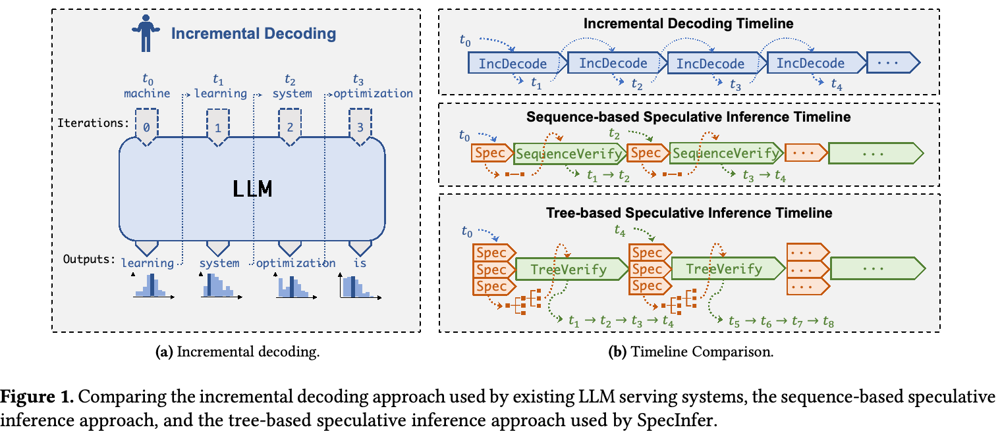
（接上页）为尽量降低 token 树验证成本，SpecInfer 引入一种树状并行 decoding 机制，在单个 LLM decoding 步骤中，相对于 LLM 的输出同时验证 token 树中的所有 token。
借助树状 speculative inference 与验证，SpecInfer 既能加速跨多个 GPU 的分布式 LLM 推理，也能加速单个 GPU 上基于卸载的 LLM 推理。评估表明，在保持相同生成准确率的同时，SpecInfer 在分布式 LLM 推理中相对于现有 LLM 服务系统实现了 1.5–2.8× 加速，在基于卸载的 LLM 推理中实现了 2.6–3.5× 加速。
概括而言，我们作出以下贡献：
- 提出 SpecInfer，一个用于 LLM 服务的树状 speculative inference 与验证系统。
- 为最大化推测性能，我们提出基于合并和基于扩展的方法来构建 token 树，分别利用 SSM 内部以及 SSM 之间的多样性。
- 为尽量降低验证成本，我们引入树状并行 decoding 机制，同时验证 token 树的全部 token。
- 评估 SpecInfer，并表明在分布式推理中它相对于现有系统最高实现 2.8× 加速，在基于卸载的推理中最高实现 3.5× 加速。
2 SpecInfer 概览
图 2 展示 SpecInfer 的整体架构，其中包含一个基于学习的推测器，它接收 token 序列作为输入，生成一棵推测 token 树。推测器的目标是最大化推测 token 树与 LLM 使用增量 decoding 生成的 token 之间的重叠，从而预测 LLM 的输出（算法 1）。
算法 1 现有 LLM 服务系统使用的增量 decoding 算法
1: 输入：输入 token 序列 ℐ 2: 输出：生成的 token 序列 3: 𝒮 = ℐ 4: while true do 5: t = Decode(LLM, 𝒮) 6: 𝒮.append(t) 7: if t = ⟨EOS⟩ then 8: 返回 𝒮
有多种方法可以为 speculative inference 准备 SSM。首先，现代 LLM 通常具有许多规模较小的架构，它们与 LLM 使用相同数据集一起预训练。例如，除了拥有 1750 亿参数的 OPT-175B 模型之外，OPT 模型系列还包括 OPT-125M 和 OPT-350M 两个变体，参数量分别为 1.25 亿和 3.5 亿，它们使用与 OPT-175B 相同的数据集进行预训练 [57]。这些预训练的小模型可以直接用作 SSM。其次，为提高 SSM 推测 token 的覆盖率，SpecInfer 采用图 2 顶部所示的基于扩展和基于合并的推测方法。推测 token 被组织为 token 树结构。
SpecInfer 使用 LLM 的方式也不同于现有 LLM 服务系统。它不将 LLM 用作预测下一个单一 token 的增量 decoder，而是将其用作 token 树验证器，相对于 LLM 的输出验证一棵推测 token 树。对于每个 token，SpecInfer 将其在 token 树中的所有祖先都视为前序 token，据此计算其激活。例如，在图 2 中，token \(t_{3,0}\) 的 attention 输出基于序列 \((t_0,t_{1,0},t_{2,1},t_{3,0})\) 计算，其中 \(t_0\)、（接下页）
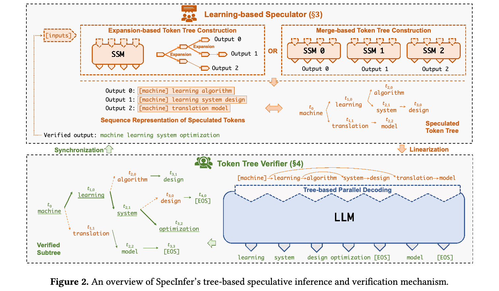
（接上页）\(t_{1,0}\) 和 \(t_{2,1}\) 是 \(t_{3,0}\) 在 token 树中的祖先。SpecInfer 包含一种新的树状并行 decoding 机制，可以在单个 LLM decoding 步骤中同时验证 token 树中的全部 token。
相比现有 LLM 推理系统的增量 decoding 方法，SpecInfer 的 speculative inference 和 token 树验证具有两项主要优势。
减少对 LLM 参数的内存访问。LLM 推理性能在很大程度上受限于 GPU 内存访问。在现有的增量 decoding 方法中，生成单个 token 需要访问 LLM 的全部参数。对于基于卸载的 LLM 推理系统，这个问题更加严重：此类系统使用单个消费级 GPU 等有限计算资源提供 LLM 服务，将模型参数保存于 CPU DRAM 和持久化存储中，再将参数加载至 GPU 的高带宽内存（HBM）进行计算。与增量 decoding 相比，只要推测 token 树与 LLM 实际输出之间的重叠不为空，SpecInfer 就能显著减少对 LLM 参数的访问。减少 GPU 设备内存访问以及 GPU 与 CPU 内存之间的数据传输，也能直接降低能耗，因为访问 GPU HBM 的能耗比浮点算术运算高两到三个数量级。
降低端到端推理延迟。LLM 服务存在端到端推理延迟较长的问题。例如，GPT-3 架构包含 1750 亿参数，处理单个请求需要数秒。在现有增量 decoding 方法中，生成每个 token 的计算都依赖于此前所有已生成 token 的 key 和 value。这引入了 token 之间的顺序依赖，要求现代 LLM 服务系统针对每个请求串行生成不同 token。在 SpecInfer 中，LLM 被用作验证器：以一棵推测 token 树作为输入，只需对 LLM 执行一次验证，就能同时检查树中的全部 token。该方法允许在单个请求中的不同 token 之间并行，从而降低 LLM 的端到端推理延迟。
3 基于学习的推测器
现有 speculative decoding 方法执行基于序列的推测：由一个 SSM 预测单条 token 序列，再交由 LLM 验证。然而，单条推测序列的关键限制在于，LLM 与推测 token 序列成功对齐的概率会随预期对齐长度呈指数下降。每一步推测只包含一个待验证的候选 token，这可能进一步加剧该问题，导致推测性能不理想。另一方面，通过鼓励每一步提供更多样化的推测候选，每一步成功匹配的概率（接下页）
算法 2 SpecInfer 使用的推测与验证算法
Speculate 接收当前 token 序列 \(\mathcal S\)，生成推测 token 树 \(\mathcal N\)。TreeParallelDecode 为每个节点 \(u\in\mathcal N\) 生成 token \(\mathcal O(u)\)。VerifyGreedy 和 VerifyStochastic 相对于 \(\mathcal O\) 检查 \(\mathcal N\)，分别使用贪心采样和随机采样生成已验证的 token 序列 \(\mathcal V\)。
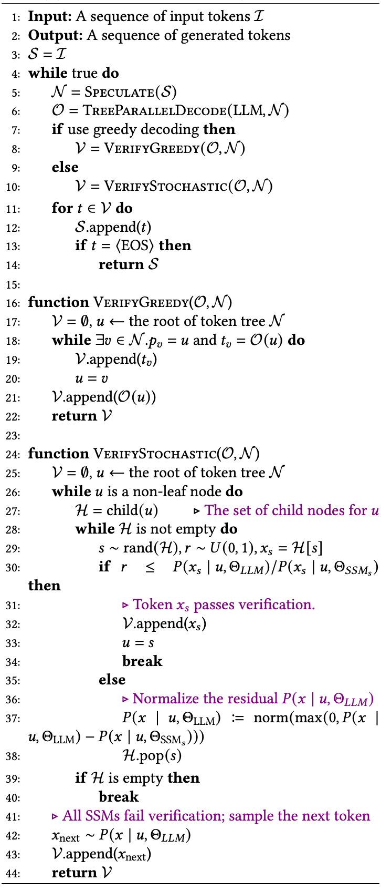
算法注释：第 27 行为节点 \(u\) 的子节点集合；第 31 行表示 token \(x_s\) 通过验证；第 36 行对残差 \(P(x\mid u,\Theta_{\mathrm{LLM}})\) 归一化；第 41 行表示所有 SSM 均未通过验证，从剩余分布采样下一个 token。
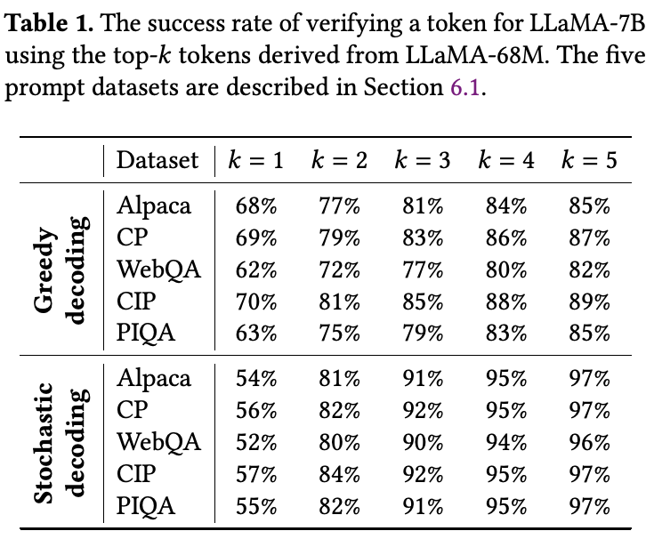
（接上页）（即 LLM decoding 出的 token 位于该候选池中）就能大幅提高。为此，SpecInfer 旨在利用单个 SSM 内部以及多个 SSM 之间的多样性，构建一棵推测候选树。具体而言，SpecInfer 的基于学习的推测器汇集一个或多个 SSM 的预测，在保持较低内存开销和推理延迟的同时，最大化推测性能。SpecInfer 使用 token 树组织推测器生成的 token，并引入两种构建 token 树的方法：基于扩展和基于合并的树构建。
定义 3.1（token 树）。token 树 \(\mathcal N\) 是一种树结构，其中每个节点 \(u\in\mathcal N\) 都标记了一个 token \(t_u\)，而 \(p_u\) 表示 \(u\) 在 token 树中的父节点。对于每个节点 \(u\)，\(S_u\) 表示将 \(S_{p_u}\) 与 \(\{t_u\}\) 拼接所确定的 token 序列。1
基于扩展的 token 树构建。构建 token 树的一种方法是在单个 decoding 步骤中从 SSM 得到多个 token。其动机来自一项重要观察：当 SSM 与 LLM 不对齐（即两个模型选择了不同的 top-1 token）时，即使 \(k\) 的取值很小，LLM 选择的 token 通常仍在 SSM 的 top-\(k\) token 中。表 1 展示了使用 SSM 的 top-\(k\) token 进行 token 验证的成功率；如果 LLM 选择的 token 位于 SSM 的 top-\(k\) token 中，则视为验证成功。相比仅使用 SSM 的 top-1 token，使用 top-5 token 可将贪心 decoding 的成功率从 70% 提高至 89%，将随机 decoding 的成功率从 57% 提高至 97%。
在每一步直接选择 top-\(k\) token 会导致潜在 token 序列数量呈指数增长，从而大幅提高推理延迟和（接下页）
1 对于根节点 \(r\)，\(S_r\) 表示 token 序列 \(\{t_r\}\)。
（接上页）内存开销。因此，我们采用一种静态策略，按照预设的扩展配置扩展 token 树。该配置表示为整数向量 \(\langle k_1,k_2,\ldots,k_m\rangle\)，其中 \(m\) 为最大的 speculative decoding 步数，\(k_i\) 表示第 \(i\) 步中为每个 token 扩展出的 token 数量。例如，图 3 展示扩展配置 \(\langle2,2,1\rangle\)，它产生四条 token 序列。评估（见第 6.4 节）表明，即使这样简单的策略也能生成高度准确的推测结果。我们承认，动态扩展 SSM 的 token 树仍是一个开放研究问题，超出本文范围，留作未来工作。
基于合并的 token 树构建。除了使用单个 SSM，SpecInfer 还可以组合多个 SSM，共同预测 LLM 的输出。SpecInfer 利用自适应 boosting [12]，以无监督方式对一组 SSM 进行联合 boost-tuning，使其输出与 LLM 对齐。SpecInfer 使用 SSM 预测 LLM 接下来将生成的若干 token，并使用通用文本数据集（例如评估中的 OpenWebText 语料 [15]），以完全无监督的方式，让多个 SSM 汇集后的输出自适应地与 LLM 对齐。具体而言，SpecInfer 将文本语料转成一组 prompt 样本，再用 LLM 为每个 prompt 生成一条 token 序列。SpecInfer 每次先充分微调一个 SSM，并标记所有 SSM 与 LLM 生成相同后续 token 的 prompt 样本。然后，SpecInfer 滤除所有已标记的 prompt 样本，使用语料中全部剩余样本充分微调下一个 SSM。
对池中的每个 SSM 重复这一过程后，SpecInfer 得到一组多样化的 SSM，其汇集输出与 LLM 在训练语料上的输出高度重叠。所有 SSM 的推理延迟相同，因此在不同 GPU 上并行运行全部 SSM，相比只使用单个 SSM，不会增加 speculative inference 的延迟。此外，SpecInfer 使用数据并行在多个 GPU 上部署 SSM，因此使用多个 SSM 不会增加每块 GPU 的内存开销。使用多个 SSM 时，每个 SSM 的输出都被视为一棵 token 树，SpecInfer 执行 token 树合并，将全部推测 token 汇集到单棵树结构中。
定义 3.2（token 树合并）。当且仅当对所有 \(1\le i\le m\)、所有 \(u\in\mathcal N_i\)，存在 \(v\in\mathcal M\) 使得 \(S_v=S_u\)，并且反向关系同样成立时，\(\mathcal M\) 是 \(m\) 棵 token 树 \(\{\mathcal N_i\}\)（\(1\le i\le m\)）的合并树。
直观而言，每棵 token 树表示一组 token 序列。合并多棵 token 树会产生一棵包含全部原树 token 序列的新树。例如，图 3 展示了由四条 token 序列合并而成的 token 树。每条 token 序列都由合并 token 树中的一个节点确定。
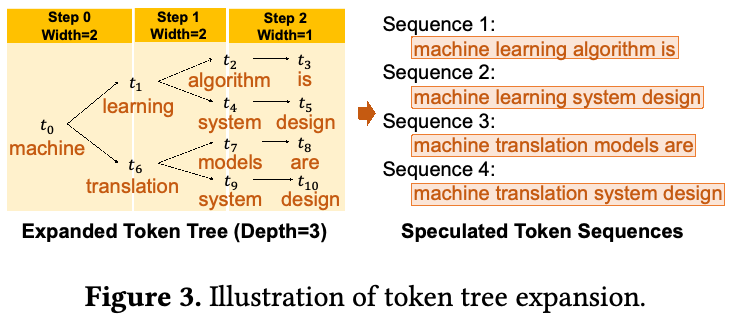
请注意，除 boosting 外，还有若干其他集成学习方法（例如 voting、bagging 和 stacking）[14] 可用于组合多个 SSM 的输出，我们将这一探索留作未来工作。
4 token 树验证器
本节介绍 SpecInfer 的 token 树验证器。它以推测器生成的 token 树为输入，相对于 LLM 的输出验证树中 token 的正确性。SpecInfer 设计的关键思想是，仅遍历一次 LLM 参数，就同时相对于原始 LLM 输出验证 token 树中的所有序列。这使 SpecInfer 能够在条件允许时 decoding 出多个 token，而不是像增量 decoding 那样只生成单个 token，从而减少对 LLM 参数的内存访问。token 树验证需要应对的一个挑战，是高效计算树中所有序列的 attention 分数。为此，我们引入 tree attention，将 attention 机制 [48] 从序列推广至树结构。此外，我们开发树状并行 decoding 机制，可以并行 decoding token 树中的全部 token。
第 4.1 和 4.2 节介绍 tree attention 与树状并行 decoding。第 4.3 节介绍相对于 LLM 输出验证 token 树的机制。
4.1 Tree Attention
基于 Transformer 的语言模型使用 attention 机制处理序列信息 [48]。LLM 通常采用 decoder-only 多头 self-attention，以单个张量 \(X\) 为输入，通过下列缩放乘法形式计算输出张量 \(O\)：
\[Q_i=X\times W_i^Q,\qquad K_i=X\times W_i^K.\tag{1}\] \[V_i=X\times W_i^V,\qquad A_i=\frac{Q_i\times K_i^T}{\sqrt d}.\tag{2}\] \[H_i=\operatorname{softmax}\bigl(\operatorname{mask}(A_i)\bigr)V_i,\qquad O=(H_1,\ldots,H_h)W^O.\tag{3}\]其中，\(Q_i\)、\(K_i\) 和 \(V_i\) 分别为第 \(i\) 个 attention head（\(1\le i\le h\)）的 query、key 和 value 张量，\(W_i^Q\)、\(W_i^K\) 和 \(W_i^V\) 为对应的权重矩阵。\(A_i\) 是一个 \(l\times l\) 矩阵，表示输入序列不同 token 之间的 attention 分数，\(l\) 为序列长度。为在生成 token 时保持因果性（即序列中的 token（接下页）
（接上页）不应影响任何前序 token 的隐藏状态），需要应用以下因果掩码函数：
\[\operatorname{mask}(A)_{jk}=\begin{cases}A_{jk},&j\ge k,\\-\infty,&j<k.\end{cases}\tag{4}\]直观而言，计算序列中第 \(j\) 个 token 的 attention 输出时，所有后续 token 的 attention 分数都应设为 \(-\infty\)，表示后续 token 不会影响第 \(j\) 个 token 的 attention 输出。2 式（3）中，\(H_i\) 表示第 \(i\) 个 attention head 的输出，\(W^O\) 是用于计算 attention 层最终输出的权重矩阵。
请注意，上述 attention 机制只适用于 token 序列。我们将该机制推广至任意树结构。
定义 4.1（Tree Attention）。对于一棵 token 树 \(\mathcal N\) 及任意节点 \(u\in\mathcal N\)，其 tree attention 定义为在 \(S_u\)（即节点 \(u\) 所表示的 token 序列）上计算原始 Transformer 序列 attention 的输出：
\[\operatorname{TreeAttention}(u)=\operatorname{Attention}(S_u),\quad\forall u\in\mathcal N.\tag{5}\]对于一组给定的 token 序列，由于每条序列 \(S\) 都由合并 token 树中的某个节点覆盖，在 token 树上执行 tree attention 能让 SpecInfer 得到所有 token 序列的 attention 输出。
4.2 树状并行 decoding
本节介绍 SpecInfer 的树状并行 decoding 机制，它并行计算 token 树中全部 token 的 tree attention。SpecInfer 在计算 tree attention 时必须应对的一个关键挑战，是管理 key-value cache。具体而言，如式（3）所示，Transformer 的 attention 机制 [48] 需要访问所有前序 token 的 key 和 value，才能计算每个新 token 的 attention 输出。为避免重新计算这些 key 和 value，如今的 LLM 推理系统通常缓存所有 token 的 key 和 value，供后续迭代复用，因为因果关系保证 token 的 key 和 value 在后续迭代中保持不变（即任意 \(j<k\) 时，\(\operatorname{mask}(A)_{jk}=-\infty\)）。然而，计算 tree attention 时，token 树中的不同序列可能包含互相冲突的 key-value cache。例如，图 4 的推测 token 树中，两个 token 序列 \((t_2,t_3,t_4,t_5)\) 和 \((t_2,t_3,t_8,t_9)\) 在第三和第四个位置拥有不同的 key 和 value。
支持 key-value cache 的一种直接方法，是沿用现有 LLM 推理系统基于序列的 decoding，并为 token 树中的每条序列使用不同的 key-value cache，如图 4 左侧所示。但这种方法计算成本很高，且存在冗余计算，因为共享公共前缀的两条 token 序列，在式（3）的因果掩码作用下，其公共前缀的 attention 输出相同。此外，为每条 token 序列启动一个 kernel 也会引入额外的 kernel 启动开销。
SpecInfer 引入两项关键技术，实现树状并行 decoding。
通过深度优先搜索更新 key-value cache。SpecInfer 不分别缓存 token 树中各条 token 序列的 key 和 value，而是利用深度优先搜索遍历 token 树，在所有 token 序列之间复用同一份 key-value cache。如图 4 所示，SpecInfer 按深度优先顺序访问 \(t_2,t_3,\ldots,t_9\)，遍历 token 树并更新共享 key-value cache。这使 SpecInfer 在计算新 token 的 attention 输出时，能够维持所有前序 token 正确的 key 和 value。
感知拓扑的因果掩码。计算 tree attention 的一种直接方式，是按前述深度优先顺序，逐个 token 计算 tree attention 输出。但这种方式会产生很高的 GPU kernel 启动开销，因为每个 kernel 只为一条 token 序列计算 tree attention。此外，由于缓存冲突，并行执行这些 kernel 需要额外 GPU 内存来分别保存各自的 key-value cache。阻碍 SpecInfer 将多个 token 批量处理的一个关键挑战，是不同 token 的 attention 计算需要不同的 key-value cache，因此无法并行处理。
我们引入感知拓扑的因果掩码，将所有 token 的 tree attention 计算融合进单个 kernel。为批量计算 attention，SpecInfer 使用树拓扑，而不是原始序列拓扑，将 token 树中全部 token 的 key 和 value 存入 key-value cache。例如，为计算图 4 推测 token 树的 tree attention，SpecInfer 同时输入已验证 token（即 \(t_2\)）和全部推测 token（即 \(t_3,t_4,\ldots,t_9\)）。这使 SpecInfer 能将 attention 计算融合进单个 kernel，但也会产生违反因果依赖关系的 attention 分数（例如，\(t_7\) 的 attention 计算使用了全部前序 token，包括不在 \(t_7\) 所在 token 序列中的 \(t_5\)）。为修正这些 token 对的 attention 分数，SpecInfer 根据 token 树的拓扑更新因果掩码。该方法计算的 attention 输出与增量 decoding 完全相同，同时比基于序列的 decoding 显著减少 kernel 启动次数。
4.3 token 验证
对于给定的推测 token 树 \(\mathcal N\)，SpecInfer 使用树状并行 decoding（见第 4.2 节）计算其 tree attention，并生成一个输出张量 \(\mathcal O\)，其中为每个节点（接下页）
2 请注意，我们使用 \(-\infty\) 而不是 0，以保证 softmax 在这些位置的输出为 0。
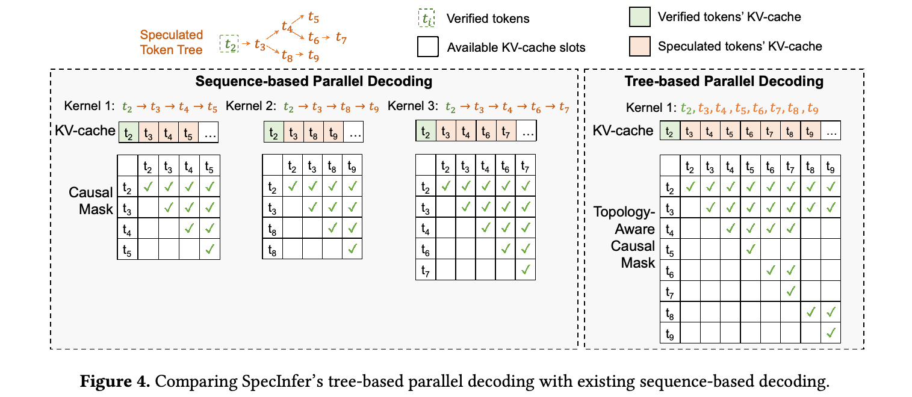
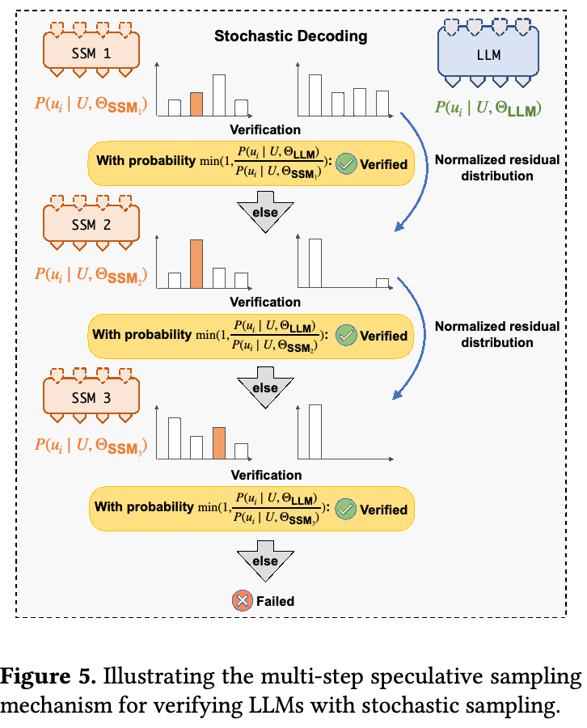
（接上页）\(u\in\mathcal N\) 包含一个 token。随后，SpecInfer 的 token 树验证器相对于 LLM 检查推测 token 的正确性。如算法 2 所示，SpecInfer 同时支持贪心采样和随机采样。
贪心 decoding。许多 LLM 应用通过贪心 decoding 生成 token，即在每个 decoding 步骤中贪心选择似然最高的 token。算法 2 的 VerifyGreedy 函数展示 SpecInfer 如何在贪心 decoding 下验证推测 token 树 \(\mathcal N\)。SpecInfer 从 \(\mathcal N\) 的根节点开始，迭代地相对于 LLM 原始输出检查节点的推测结果。对于节点 \(u\in\mathcal N\)，若 \(u\) 包含一个子节点 \(v\)（即 \(p_v=u\)），其 token 与 LLM 输出匹配（即 \(t_v=\mathcal O(u)\)），则 SpecInfer 成功推测了其下一个 token。此时，SpecInfer 完成对节点 \(u\) 的验证，继续检查其子节点 \(v\)。当节点 \(u\) 没有包含 LLM 输出的子节点时，SpecInfer 将 \(\mathcal O(u)\) 作为已验证节点加入 \(\mathcal N\)，并终止验证过程。最后，全部已验证节点被追加到当前已生成的 token 序列 \(\mathcal V\)。token 树验证使 SpecInfer 能在条件允许时 decoding 出多个 token，而不是像增量 decoding 那样只生成单个 token，同时保持与增量 decoding 相同的生成性能。
随机 decoding。为增加所生成 token 的多样性，许多 LLM 应用采用随机 decoding，从概率分布 \(P(u_i\mid u_0,\ldots,u_{i-1};\Theta_{\mathrm{LLM}})\) 中采样一个 token。其中 \(U=u_0,\ldots,u_{i-1}\) 为此前生成的 token，\(u_i\) 为下一个待生成 token，\(\Theta_{\mathrm{LLM}}\) 表示参数化的 LLM。
为在随机 decoding 下验证推测 token 树，我们引入多步推测采样（MSS）算法。其伪代码见算法 2 的 VerifyStochastic 函数，流程如图 5 所示。我们的方法能够从理论上保证与增量 decoding 相同的 LLM 生成性能，同时优化能够通过验证的推测 token 数量。定理 4.2 证明其正确性。
定理 4.2。对于给定的 LLM 及 \(m\) 个 SSM（即 \(\mathrm{SSM}_1,\ldots,\mathrm{SSM}_m\)），令 \(P(u_i\mid U;\Theta_{\mathrm{LLM}})\) 为使用随机 decoding 采样一个 token 的概率分布，（接下页）
（接上页）其中 \(U=u_0,\ldots,u_{i-1}\) 为此前生成的 token，\(u_i\) 为下一个待生成的 token，\(\Theta_{\mathrm{LLM}}\) 表示参数化的 LLM。
令 \(P_{\mathrm{SpecInfer}}(u_i\mid U;\Theta_{\mathrm{LLM}},\{\Theta_{\mathrm{SSM}_j}\})\) 为使用 SpecInfer 多步推测采样（见算法 2 的 VerifyStochastic 函数）采样 token \(u_i\) 的概率分布，其中 \(\Theta_{\mathrm{SSM}_j}\) 为第 \(j\) 个参数化的 SSM。则对任意 \(U,u_i,\Theta_{\mathrm{LLM}},\Theta_{\mathrm{SSM}_j}\)，都有：
该定理的证明见 [28]。
我们承认，保持随机 decoding 概率分布的一种更直接的方法，是直接采样下一个 token \(x\sim P(u_i\mid U;\Theta_{\mathrm{LLM}})\)，并检查 \(x\) 是否为推测 token 树中 \(u_{i-1}\) 的一个子节点。我们将这种方法称为朴素采样（NS），并证明 SpecInfer 多步推测采样的拒绝概率总是不高于朴素采样。
定理 4.3。令 \(P(\mathrm{reject}\mid\mathrm{MSS},U,\Theta_{\mathrm{LLM}},\{\Theta_{\mathrm{SSM}_j}\})\) 表示采用多步推测采样时拒绝推测的概率，简记为 \(P(\mathrm{reject}\mid\mathrm{MSS})\)；令 \(P(\mathrm{reject}\mid\mathrm{NS},U,\Theta_{\mathrm{LLM}},\{\Theta_{\mathrm{SSM}_j}\})\) 表示采用朴素采样（NS）时拒绝推测的概率，简记为 \(P(\mathrm{reject}\mid\mathrm{NS})\)。则对所有 \(U,\Theta_{\mathrm{LLM}},\{\Theta_{\mathrm{SSM}_j}\}\)，均有：
\[P(\mathrm{reject}\mid\mathrm{MSS})\le P(\mathrm{reject}\mid\mathrm{NS}).\]我们在 [28] 中给出了定理 4.3 的证明。
请注意，以往工作已针对基于序列的 speculative inference 提出单步推测采样 [5, 25]。不同于这些方法，SpecInfer 利用 token 树提高推测性能，需要采用不同的验证算法。因此，SpecInfer 在一个 token 的所有分支上执行多步验证（见算法 2 的 VerifyStochastic），在保证与增量 decoding 等价的同时最大化成功率。所提出的 MSS 算法不仅适用于多个 SSM 的合并方法，也支持单个 SSM 和 top-\(k\) 采样的扩展方法。
5 系统设计与实现
本节介绍 SpecInfer 分布式运行时系统的设计与实现（第 5.1 和 5.2 节），分析推测和验证的计算与内存开销（第 5.3 节），并介绍可能受益于 SpecInfer 技术的 LLM 应用（第 5.4 节）。
5.1 SpecInfer 的运行时设计
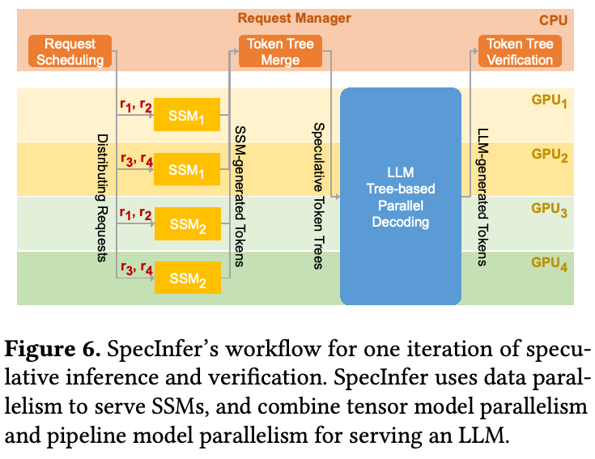
图 6 展示单轮 speculative inference 与验证的工作流程。SpecInfer 的请求管理器接收 LLM 服务请求，改用 Orca [55] 的迭代级调度策略，调度这些请求。具体而言，SpecInfer 迭代地从待处理请求池中选择请求，并对选中的请求执行一轮 speculative inference 和 token 树验证。由于 SSM 很小，能够放入单块 GPU，SpecInfer 将 GPU 均匀分配给各个 SSM，并以数据并行方式部署 SSM。例如，图 6 展示在四块 GPU 上部署两个 SSM、处理四个请求（即 \(r_1,r_2,r_3,r_4\)）的方式。SSM 生成的 token 被发回请求管理器，后者使用第 4 节介绍的树合并算法，为每个请求生成推测 token 树。
SpecInfer 使用 Megatron-LM [41] 引入的混合并行策略部署 LLM：通过张量模型并行，将每个 Transformer 层分布到节点内多个 GPU；通过流水线模型并行，将 Transformer 层划分到不同节点。所有 GPU 执行树状并行 decoding（见第 4.2 节），计算 tree attention 分数，再将 LLM 生成的 token 发回请求管理器，后者最终相对于 LLM 输出验证推测 token（见第 4.3 节）。
请注意，请求管理器引入的开销（即请求调度、token 树合并和验证）相对于 LLM 推理执行时间可以忽略。此外，SpecInfer 的请求管理器与 GPU worker 只通信 token，不传输其向量表示，因此通信开销同样可以忽略。
连续批处理。SpecInfer 使用 Orca [55] 引入的连续批处理，并行服务多个 LLM 推理请求。具体而言，SpecInfer 以迭代为粒度调度 LLM 执行，而不是以请求为粒度。每轮 LLM decoding 后，SpecInfer 检查每个请求的状态，将所有已完成请求的生成结果发给客户端。这一设计也使 SpecInfer 能够在不等待所有当前请求完成的情况下，开始处理新到达的请求。
5.2 SpecInfer 的实现
SpecInfer 基于 FlexFlow [21, 47] 实现，后者是用于 DNN 计算的分布式多 GPU 运行时。FlexFlow 提供 API，让用户以层为单位定义 DNN 模型。由于底层算子对应一致，它兼容 PyTorch 的模型定义。例如，HuggingFace [19] 的开源 LLM 无需修改即可直接导入 SpecInfer 提供服务。用户也可以给出并行策略，为每一层指定数据并行、模型并行和流水线并行的程度。DNN 被表示为计算图，其中每个节点为一个内存区域，每条边为作用于一个或多个区域的操作。操作可用三层抽象表示：层、算子与任务。FlexFlow 编译器将计算图从最高抽象层次（即层）转换至最低层次（即任务）。任务也是并行化的基本单位；它们不可抢占，并异步执行。
CUDA kernel 优化。直接启动 cuBLAS 和 cuDNN kernel 计算 attention 会产生较高的 kernel 启动开销，也无法利用现代 GPU 提供的共享内存。为解决这一低效问题，SpecInfer 使用基于 FasterTransformer [32] 构建的定制 kernel 来计算 attention。在这个 kernel 中，每个线程块为一个请求计算一个 head。首先，将 query 张量加载到 GPU 共享内存，供线程块中的所有线程访问。随后，每个线程计算 query/key 乘积的一部分，并将结果广播给其他线程，用于计算 query/key 乘积最大值以及指数和。为支持树状并行 decoding，SpecInfer 并行计算树内所有 token，并利用感知拓扑的因果掩码保持因果性。
5.3 推测与验证的开销
SpecInfer 以额外的内存和计算开销为代价，加速生成式 LLM 推理。本节分析这些开销，说明它们通常比执行 LLM 推理的内存和计算成本低一至两个数量级。
内存开销。SpecInfer 推测—验证方法的内存开销来自两个方面。首先，除部署 LLM 外，SpecInfer 还需分配内存，保存共同推测 LLM 输出的一个或多个 SSM 的参数。评估表明，使用规模比 LLM 小 100–1000× 的 SSM，SpecInfer 就能显著改善性能。因此，部署每个 SSM 增加的总体内存需求不到 1%。第二个来源是 token 树验证引擎：它验证整棵 token 树，而不是 decoding 单个 token，因此需要额外内存来缓存所有 token 的 key 和 value，并保存 attention 分数。由于如今的 LLM 服务必须支持非常长的序列，我们观察到 token 树相关的内存开销相对于 key-value cache 可以忽略。
计算开销。类似地，推测和验证引入的计算开销也来自两个方面。首先，SpecInfer 需要以增量 decoding 模式运行 SSM，生成候选 token。使用多个 SSM 时，SpecInfer 在多个 GPU 间并行处理这些 SSM，以尽量降低推测延迟。其次，SpecInfer 通过计算整棵 token 树的 attention 输出进行验证，其中大部分 token 与 LLM 输出不匹配，因此对于增量 decoding 推理而言是不必要的。然而，现有 LLM 推理系统的 key-value cache 机制使其无法并行服务大量请求，导致增量 decoding 服务时 GPU 计算资源利用不足。SpecInfer 的 token 树验证利用了这些未充分使用的资源，因此相对于增量 decoding，其运行时开销可以忽略。
5.4 应用
我们的 speculative inference 和 token 树验证技术可直接用于多种 LLM 应用。我们指出两类能够显著受益于这些技术的实际场景。
分布式 LLM 推理。现代 LLM 的内存需求超出单个计算节点中一个或多个 GPU 的容量，当前应对高内存需求的方法是将 LLM 参数分布到多个 GPU [29]。例如，为拥有 1750 亿参数的 GPT-3 部署单条推理流水线，仅以单精度浮点数保存模型参数就需要超过 16 块 NVIDIA A100-40GB GPU。分布式 LLM 推理主要受限于每个 LLM decoding 步骤中 GPU 间传输中间激活的延迟。虽然 SpecInfer 的方法不直接减少 GPU 间通信总量，但其验证机制能增大通信粒度，并减少 decoding 步数。
基于卸载的 LLM 推理。另一类能够受益于 SpecInfer 技术的实际场景，是基于卸载的 LLM 推理：利用 CPU DRAM 保存 LLM 参数，并以流水线方式将其中一部分加载到 GPU 上进行计算 [40]。通过在条件允许时验证多个 token，SpecInfer 能减少 LLM decoding 步数，并降低 CPU DRAM 与 GPU HBM 之间的整体通信量。
6 评估
6.1 实验设置
LLM。为比较 SpecInfer 与现有 LLM 服务系统的运行性能，我们使用两个公开 LLM 系列评估这些系统：OPT [57] 与 LLaMA [46]。具体而言，我们选择 LLaMA-7B、OPT-13B、OPT-30B 和 LLaMA-65B 作为 LLM，选择 LLaMA-68M 和 OPT-125M 作为 SSM。LLM 和 SSM 的预训练参数均来自其 HuggingFace 仓库 [19]；[28] 介绍了 SpecInfer 如何对多个 SSM 进行联合 boost-tuning。
数据集。我们在五个数据集上评估 SpecInfer：Chatbot Instruction Prompts（CIP）[34]、ChatGPT Prompts（CP）[30]、WebQA [1]、Alpaca [36, 45] 和 PIQA [2]。我们只使用这些数据集中的 prompt／问题来组成输入 prompt，以模拟真实对话轨迹。
平台。实验在两个 AWS g5.12xlarge 实例上进行，每个实例配备四块 NVIDIA A10 24GB GPU、48 个 CPU 核心和 192 GB DRAM。节点间通过 100 Gbps 以太网连接。
实验采用基于扩展的方法（见第 3 节）构建 token 树，扩展配置为 \(\langle1,1,3,1,1,1,1,1\rangle\)，这在我们的基准上表现良好。我们在第 6.4 节分析扩展配置的影响，在第 6.5 和 6.6 节评估树状并行 decoding 与多步推测采样，最后在 [28] 对比基于扩展和基于合并的树构建方法。
6.2 分布式 LLM 推理
我们在 LLaMA-7B、OPT-30B 和 LLaMA-65B 上，对比 SpecInfer、vLLM [24]、HuggingFace Text Generation Inference（TGI）[18] 和 FasterTransformer [32] 的端到端分布式 LLM 推理性能。对于 LLaMA-7B 和 OPT-30B，所有系统均以半精度浮点数部署这两个 LLM，分别使用一块和四块 A10 GPU，并采用张量模型并行。LLaMA-65B 无法放入单节点的四块 GPU，因此 FasterTransformer 和 SpecInfer 均使用两个节点上的八块 A10 GPU，结合节点内张量模型并行与跨节点流水线模型并行部署它。vLLM 和 HuggingFace TGI 不支持流水线模型并行，无法在多个节点上部署单个 LLM。
为排除系统实现可能造成的影响，我们还评估 SpecInfer 的另外两种配置。第一种是采用增量 decoding 的 SpecInfer：推测器生成空 token 树，验证器在每个 decoding 步骤中恰好验证一个 token，用以评估本实现的运行性能。第二种是采用基于序列的 speculative inference 的 SpecInfer：使用单个预训练 SSM 和基于序列的 decoding，作为现有 speculative inference 系统的参照。
我们使用第 6.1 节所述五个数据集的 prompt。对每个 prompt，所有系统最多生成 128 个新 token，并在图 7 中报告平均每 token 延迟。请注意，由于验证器每轮可验证多个 token，SpecInfer 可能生成超过 128 个新 token；此时我们将其输出截断至 128 个 token。增量 decoding 配置的 SpecInfer 与现有系统性能相当，因为所有系统都使用相同策略在多块 GPU 上并行执行 LLM 推理，并使用相同 kernel 库（即 cuDNN、cuBLAS 和 cuTLASS）在 GPU 上执行推理计算。采用树状 speculative inference 与验证后，SpecInfer 在单节点多 GPU 推理中相对于增量 decoding 系统实现 1.5–2.5× 加速，在多节点多 GPU 推理中实现 2.4–2.8× 加速，同时对所有 prompt 生成与增量 decoding 完全相同的 token 序列。加速来自利用闲置 GPU 资源执行树状并行 decoding，同时保持与增量 decoding 相同的每轮延迟。
与基于序列的 speculative inference 相比，SpecInfer 的树状方法进一步使 LLM 服务延迟降低 1.2–1.5×。这一提升来自：（1）利用 token 树优化推测性能；（2）使用树状并行 decoding 并行验证整棵 token 树；（3）执行多步推测采样，改善验证性能。我们在第 6.4、6.5 和 6.6 节进一步评估这些方面。
请注意，随着 batch 大小（即并发请求数量）增加，SpecInfer 相对于现有系统的性能提升会减小。这是因为 SpecInfer 利用闲置 GPU 资源执行树状并行 decoding，同时维持与增量 decoding 相同的每轮延迟。更大的 batch 为增量 decoding 引入更多可并行计算，因而留给 SpecInfer 的闲置 GPU 资源更少。另一方面，如图 7 所示，更大的 batch 也增加了每个请求的端到端延迟。总体而言，SpecInfer 对低延迟 LLM 推理最有益。
6.3 基于卸载的 LLM 推理
SpecInfer 的另一个重要应用是基于卸载的 LLM 推理：系统将 LLM 参数卸载到 CPU DRAM，再以流水线方式将部分参数加载至 GPU 执行推理计算。我们使用单块 24GB A10 GPU 和两个 LLM（即 OPT-13B 与 OPT-30B），对比 SpecInfer 与 FlexGen [39] 基于卸载的端到端 LLM 推理性能。这两个模型均超出 A10 GPU 的内存容量，因此部署时需要卸载。SpecInfer 和 FlexGen 都将全部模型参数保留于 CPU DRAM。计算期间，按需使用的权重从 CPU（接下页）
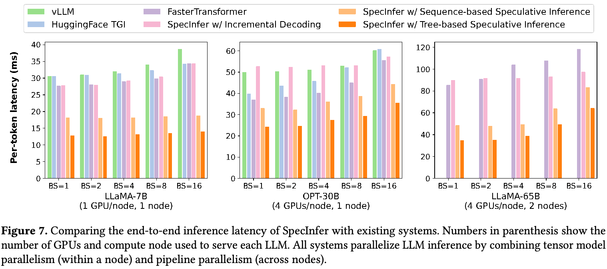
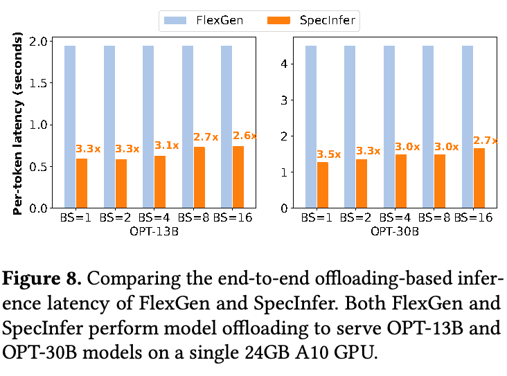
（接上页）加载到 GPU。图 8 展示结果。与 FlexGen 相比，SpecInfer 将每 token 延迟降低了 2.6–3.5×。由于基于卸载的 LLM 推理的主要瓶颈，是为加载 LLM 参数而在 CPU DRAM 与 GPU HBM 之间进行的通信，SpecInfer 相对于现有系统的提升，来自在条件允许时验证多个 token，进而减少 LLM decoding 步数，以及 CPU 与 GPU 之间的数据传输。
6.4 token 树构建
本节评估基于扩展的 token 树构建机制。首先研究 token 树宽度如何影响 SpecInfer 的推测性能。实验采用 LLaMA-7B 和 LLaMA-68M 分别作为 LLM 与 SSM，扩展配置为 \(\langle1,1,k,1,1,1,1,1\rangle\)（即在第三个 token 处扩展），其中 \(k\) 是 token 树宽度。图 9 展示 Alpaca 数据集 [45] 全部 prompt 中，每个 decoding 步骤平均验证 token 数量的累积分布函数（CDF）。相比基于序列的推测（即树宽度为 1），使用 token 树可使贪心 decoding 的 LLM decoding 步数减少 1.2–1.5×，使随机 decoding 的步数减少 1.3–1.4×。
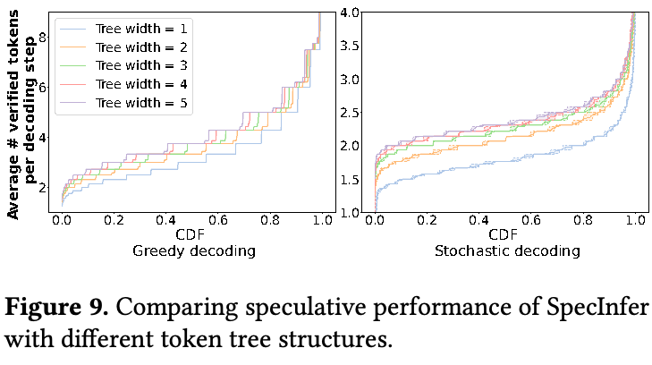
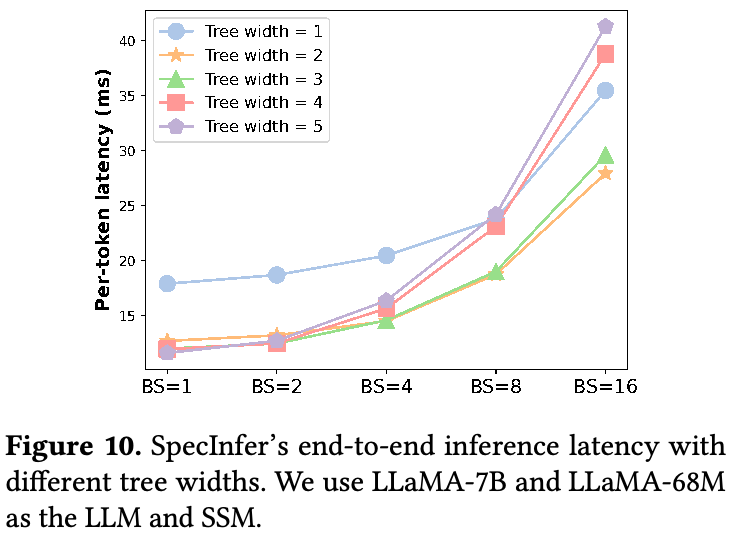
更大的 token 树宽度能够减少处理请求所需的 LLM decoding 步数，代价是增加验证（接下页）
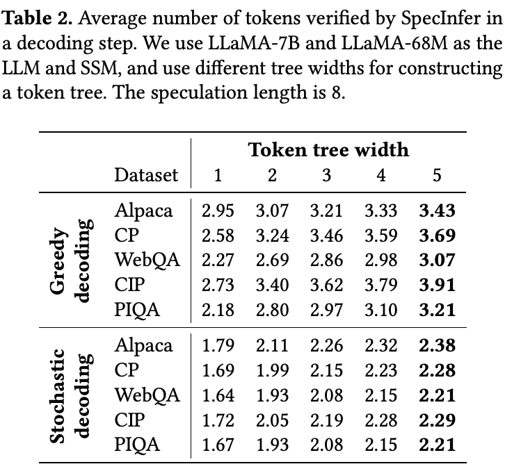
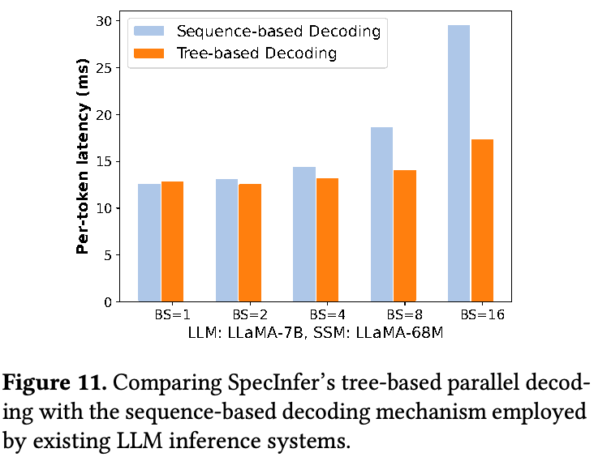
（接上页）开销，因为 SpecInfer 必须验证更多 token。图 10 对比不同树宽度下 SpecInfer 的端到端推理延迟。对于小 batch（即 BS = 1 和 2），使用较大的树宽度能够持续降低每 token 延迟，因为 SpecInfer 能利用空闲 GPU 资源并行验证更多 token，同时保持相同的每轮延迟。对于大 batch（即 \(\mathrm{BS}\ge4\)），更大的树宽度会增加 token 树验证延迟，因为 SpecInfer 能利用的空闲 GPU 资源更少；树宽度为 2 或 3 时，推测性能与验证延迟达到良好平衡，性能最好。
6.5 树状并行 decoding
现在评估 SpecInfer 树状并行 decoding 机制的有效性，该机制并行 decoding token 树中的全部 token。作为对照，所有现有 LLM 推理系统均采用基于序列的 decoding，需要将 token 树分解为多条 token 序列，并由于潜在的 key-value cache 冲突，使用独立资源处理各条序列（见第 4.2 节）。如图 11 所示，SpecInfer 的树状并行 decoding 在小 batch 下与现有基于序列的 decoding 机制性能相当，在大 batch 下则最高实现 1.8× 加速。这一提升来自：（1）消除共享前缀序列的冗余 attention 计算；（2）通过感知拓扑的因果掩码，将所有 token 的 tree attention 融合到单个 kernel（见第 4.2 节）。
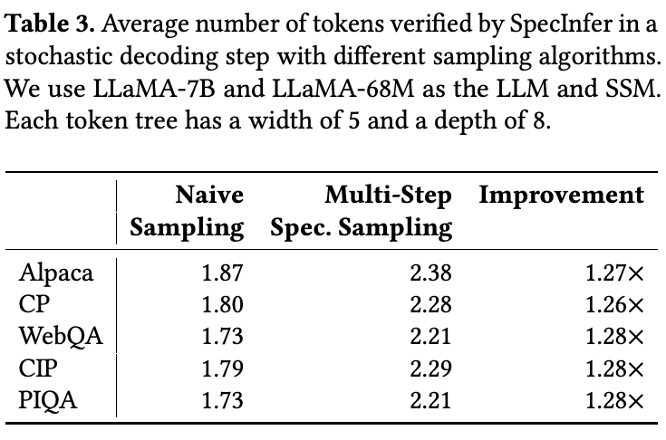
6.6 多步推测采样
本节评估多步推测采样（MSS）与 VerifyStochastic 算法如何改善 SpecInfer 在随机 decoding 下的推测性能。我们使用朴素采样作为基线，即 SpecInfer 直接从 LLM 采样下一个 token，并检查该 token 是否包含在推测 token 树中（见第 4.3 节）。由于不同采样算法的推测与验证开销相同，本实验关注每个随机 decoding 步骤中平均能够验证的 token 数量。表 3 展示结果。相比朴素采样，MSS 在各种 prompt 数据集上都能将验证 token 数量平均提高 1.2–1.3×，同时保证与 LLM 相同的输出分布。
7 相关工作
通过持续扩大模型规模，基于 Transformer 的 LLM 已在众多人类水平的语言建模任务中展现出巨大潜力 [7, 9, 37, 43, 48]。GPT-3 成为首个参数量超过 100B 的模型 [3] 之后，又有多个超过 100B 参数的 LLM 发布，包括 OPT-175B [57]、Bloom-176B [38] 与 PaLM [7]。近期工作（接下页）
（接上页）提出多种加速生成式 LLM 推理的方法，可分为两类。
无损加速。以往工作已经探索用 LLM 作为验证器而非 decoder 来加速推理。例如，Yang 等人 [53] 提出参考辅助推理，利用 LLM 输出与检索文档所得参考内容之间的重叠，通过检查 LLM 的 decoding 结果判断每段参考内容是否合适。受到处理器优化中推测执行思想 [4, 16] 的启发，近期工作提出 speculative decoding：使用小型语言模型生成一条 token 序列，再由 LLM 检查这些 token 的正确性 [5, 22, 25, 44, 51]。
SpecInfer 与这些工作有两点关键区别。首先，SpecInfer 并非只考虑单条 token 序列，而是生成并验证一棵 token 树，其每个节点表示一条唯一的 token 序列。SpecInfer 通过 tree attention 并行计算这些序列的 attention 输出，并采用一种新的树状 decoding 算法，复用各序列共享的中间结果。其次，以往尝试通常只考虑用单个小型语言模型进行推测，由于模型容量差距，它无法与 LLM 良好对齐。SpecInfer 引入两种新的推测方法：（1）从单个 SSM 扩展；（2）合并多个微调过的 SSM；所生成的 token 树大幅提高了对 LLM 输出的覆盖率。
以往工作还提出多种在现代硬件平台上优化机器学习计算的技术。例如，TVM [6] 和 Ansor [58] 为给定张量程序自动生成 kernel。TASO [20] 和 PET [50] 自动发现图级变换，优化 DNN 计算图。SpecInfer 的技术与这些系统正交，可结合使用来加速生成式 LLM 计算；我们认为这是值得探索的未来方向。
有损加速。BiLD [23] 是一个采用单个 SSM 加速 LLM decoding 的 speculative decoding 框架。与上面提到的系统不同，其加速是有损的：速度提升可能以所生成 token 的质量下降为代价。另一类研究利用模型压缩降低 LLM 推理延迟，同时牺牲 LLM 的预测性能。例如，以往工作提出对 LLM 权重／激活进行量化，以降低提供这些 LLM 服务时的内存和计算需求 [8, 11, 35, 52, 54]。近期工作进一步探索多种结构化剪枝技术来加速 Transformer 架构 [10, 17, 49]。SpecInfer 与这些工作的关键区别在于，它不直接减少 LLM 推理的计算需求，而是以更适于并行的方式重组推理计算，以可控的内存和计算开销为代价，减少内存访问与推理延迟。
树结构 attention。Nguyen 等人 [31] 提出树结构 attention，通过在输入文本的解析树上运行 Transformer 模型，捕获文本的层次组合结构。为执行 attention 处理，该方法使用一一映射对树进行编码和 decoding。它与 SpecInfer 的树状 decoding 有两点关键区别。首先，SpecInfer 用树合并候选序列以压缩公共前缀，而 Nguyen 等人的方法用解析树表示单条序列。SpecInfer 不将解析树引入 LLM，而是通过并行验证 decoding 得到的序列来加速推理。其次，SpecInfer 的 attention 输出 token 序列，而不是树。
多样本 decoding 技术。与树状 speculative inference 类似，beam search、top-k 采样和 top-p 采样在每一步考虑多条候选 token 序列，并能剪除低概率选项。然而，SpecInfer 的树状 decoding 借助 SSM，推测性地预测多个候选，并相对于 LLM 并行验证，以减少 decoding 迭代次数与延迟。相比之下，beam search 和 top-k／top-p 采样是直接应用于 LLM 输出概率的 decoding 策略，用于生成高概率序列，并不减少 decoding 步数。SpecInfer 支持 beam search、top-k 采样和 top-p 采样。这些技术属于正交的 decoding 优化，可与树状 speculative decoding 结合。
8 结论
本文介绍 SpecInfer，一个通过树状 speculative inference 与验证来加速生成式 LLM 推理的系统。SpecInfer 的关键见解是同时考虑多样化的推测候选，高效预测 LLM 的输出；这些候选组织成 token 树，使用树状并行 decoding 机制相对于 LLM 并行验证。对于分布式及基于卸载的 LLM 推理，SpecInfer 都显著减少了对 LLM 参数的内存访问，并降低了端到端推理延迟。
致谢
感谢 Tianqi Chen、Bohan Hou、Hongyi Jin、匿名 ASPLOS 审稿人，以及我们的论文指导人 Shan Lu 对本工作的反馈。本研究部分由 NSF 项目 CNS-2147909、CNS-2211882 和 CNS-2239351，以及 Amazon、Cisco、Google、Meta、Oracle、Qualcomm 和 Samsung 的研究资助支持。
A 复现材料附录
A.1 摘要
复现材料包含运行 SpecInfer 的代码，以及用于复现论文实验的数据集和脚本。
A.2 复现材料检查清单（元信息）
- 算法：树状 speculative inference。
- 程序：
spec_infer.cc、incr_decoding.cc。 - 编译：CMake。
- 运行环境：CUDA、NCCL、MPI、UCX、Python3。
- 硬件：两个 AWS g5.12xlarge 实例，每个实例配备 4 块 NVIDIA A10 24GB GPU、48 个 CPU 核心和 192 GB DRAM。
- 指标：端到端平均延迟。
- 输出：端到端延迟。
- 实验：服务器级 GPU 推理、基于卸载的推理。
- 大约需要多少磁盘空间？每个节点 350GB。
- 准备工作流程大约需要多久？2 小时。
- 完成实验大约需要多久？6 小时。
- 是否公开可用？是。
- 代码许可证（如公开可用）：Apache License v2.0。
- 数据许可证（如公开可用）：LLAMA 采用 GNU 许可证，OPT 采用非商业许可证。
- 是否归档（提供 DOI）：https://doi.org/10.5281/zenodo.10854410。
A.3 说明
A.3.1 获取方式。复现材料发布于 GitHub：https://github.com/goliaro/specinfer-ae。仓库包含 SpecInfer 源代码及框架构建说明，也提供用于复现论文实验的脚本。使用下列命令克隆仓库（务必传入 --recursive 标志）：
git clone --recursive \ https://github.com/goliaro/specinfer-ae.git
A.3.2 硬件依赖。我们在两个 AWS g5.12xlarge 实例上运行实验，每个实例配备 4 块 NVIDIA A10 24GB GPU、48 个 CPU 核心和 192 GB DRAM。我们提供创建和配置这些实例的说明。
A.3.3 软件依赖。需要以下软件：CUDA 12.1、NCCL、Rust、CMake 和 Python3。此外，多节点实验需要 UCX 和 MPI。其他 Python 依赖列于：https://github.com/flexflow/FlexFlow/blob/inference/requirements.txt。我们推荐使用 Deep Learning OSS Nvidia Driver AMI GPU PyTorch 2.1.0 (Ubuntu 20.04) AMI，并提供脚本及 conda 环境以安装其余所有依赖。
A.3.4 模型。实验使用下列 LLM／SSM 模型（括号内为对应 HuggingFace 仓库）：LLaMA-68M（JackFram/llama-68m）、LLaMA-7B（huggyllama/llama-7b）、LLaMA-65B（huggyllama/llama-65b）、OPT-125M（facebook/opt-125m）、OPT-13B（facebook/opt-13b）、OPT-125M（facebook/opt-30b）。可使用以下脚本下载全部模型：
./download_models.sh
译注：原文最后一项模型名写作 OPT-125M，但其仓库为 facebook/opt-30b，这里保留原文记录。
A.4 安装
复现实验需要访问两个 AWS g5.12xlarge 实例，或者具有相同 GPU／CPU／网络规格的其他机器。若使用我们提供的预配置实例，可以跳过本步骤。
启动实例。使用 Deep Learning OSS Nvidia Driver AMI GPU PyTorch 2.1.0 (Ubuntu 20.04) AMI 启动两个 AWS g5.12xlarge 实例。务必将实例放入采用 cluster 策略的 placement group，以实现低延迟网络性能。为所有实例附加相同安全组，并在其中添加入站规则，允许同一安全组内的全部入站流量。例如，可添加规则：Type: All TCP, Source: Anywhere-IPv4。
安装前置依赖。获得 AWS 实例访问权限后，按以下步骤安装前置依赖。首先运行 conda init bash 启用 conda shell 支持，然后重启 shell 会话。接着运行以下命令，创建包含全部必要依赖的 conda 环境：
conda env create -f FlexFlow/conda/flexflow.yml conda activate flexflow
多节点配置。运行 install_ucx.sh 脚本下载并构建 UCX。接着，若在两个 AWS 实例上运行 SpecInfer，需要配置 MPI，使两实例能够相互访问。选择一个主节点，并创建 SSH 密钥对：
ssh-keygen -t ed25519
将公钥（~/.ssh/id_ed25519.pub）的内容追加到主节点和次节点两台机器上的 ~/.ssh/authorized_keys 文件。若 .ssh 文件夹或 authorized_keys 文件不存在，需要手动创建。最后，在 ~/hostfile 路径创建文件，内容如下：
<main_node_private_ip> slots=4 <secondary_node_private_ip> slots=4
将 <main_node_private_ip> 和 <secondary_node_private_ip> 替换为两台机器的私有 IP 地址，将 slots 数替换为可用 GPU 数量（若使用推荐的 AWS 实例，此值为 4）。可运行以下命令查找每台机器的私有 IP 地址，并使用打印的第一个 IP 值：
hostname -I
安装 SpecInfer。运行以下脚本安装 SpecInfer：
./install_specinfer.sh
A.5 基础测试
为确保 SpecInfer 安装正确且功能正常，运行 basic_test.sh 脚本。该脚本测试单节点和多节点上的基础增量 decoding 与 speculative inference 功能，并测试卸载支持。如果打印出 Test passed! 消息，则测试通过。
A.6 实验工作流程
复现材料附带用于收集数据、复现论文结果的脚本，也附带将输出数据转为 CSV 格式以便绘图的脚本。
运行实验。我们在不同硬件配置下运行以下两个实验来评估 SpecInfer。输出数据保存在 FlexFlow/inference/output 路径。
- 服务器级 GPU 评估。该实验测试 SpecInfer 在服务器级 GPU 上的性能。LLM 和 SSM 被加载至 GPU 内存，我们测量使用一个和两个节点时的端到端推理延迟。单节点情况下，分别使用 1 块或 4 块 GPU 测量性能；多节点情况下，每节点使用 4 块 GPU。实验使用 LLAMA-7B、OPT-30B 和 LLAMA-65B 作为 LLM，LLAMA-68M 和 OPT-125M 作为 SSM。实验在三种模式下运行 SpecInfer：增量 decoding、基于序列的 speculative decoding，以及树状 speculative decoding。前两者用于获取消融研究数据，后者是 SpecInfer 提出的新推理模式，也是用户部署时使用的模式。运行服务器级 GPU 评估：
./server_gpu_experiments.sh
- 卸载评估。该实验测试仅将部分参数加载至 GPU 内存、其余参数卸载至 CPU DRAM 时 SpecInfer 的性能。当目标模型大于可用 GPU 内存时，可使用这一技术执行推理。实验中，SpecInfer 使用单块 GPU，并在 CPU 与 GPU 之间交换模型权重。运行卸载评估：
./offloading_experiments.sh
第三方框架。请遵循 vLLM、FasterTransformer、HuggingFace TGI 和 FlexGen 的官方文档，复现第三方框架在这些实验场景下的性能。
输出数据。上述脚本在 FlexFlow/inference/output 路径生成数据。对每种场景，.txt 文件包含每个 prompt 的生成输出，.out 文件包含 stdout 日志。生成输出的质量可通过目视评估，并与第三方推理框架的输出进行比较。我们提供解析原始输出数据并生成 CSV 文件的脚本，这些 CSV 可用于生成论文中的图。README 提供全部脚本细节，以及 CSV 文件与图之间的对应关系。
A.7 评估与预期结果
CSV 文件中的数据应表现出与论文图表相似的性能。预计会存在一定波动，但总体而言，SpecInfer 的表现应符合论文图 7–11。
A.8 实验自定义
用户可以修改评估脚本中的配置参数，以改变 GPU／CPU 数量、GPU／CPU 内存、batch 大小、使用的 LLM／SSM 模型、prompt 数据集、全精度或半精度，以及最大生成 token 数量等参数。
参考文献
[1] Jonathan Berant, Andrew Chou, Roy Frostig, and Percy Liang. 基于问答对在 Freebase 上进行语义解析。In Proceedings of the 2013 Conference on Empirical Methods in Natural Language Processing, pages 1533–1544, Seattle, Washington, USA, October 2013. Association for Computational Linguistics.
[2] Yonatan Bisk, Rowan Zellers, Ronan Le Bras, Jianfeng Gao, and Yejin Choi. PIQA：自然语言中的物理常识推理。In Thirty-Fourth AAAI Conference on Artificial Intelligence, 2020.
[3] Tom B. Brown, Benjamin Mann, Nick Ryder, Melanie Subbiah, Jared Kaplan, Prafulla Dhariwal, Arvind Neelakantan, Pranav Shyam, Girish Sastry, Amanda Askell, Sandhini Agarwal, Ariel Herbert-Voss, Gretchen Krueger, Tom Henighan, Rewon Child, Aditya Ramesh, Daniel M. Ziegler, Jeffrey Wu, Clemens Winter, Christopher Hesse, Mark Chen, Eric Sigler, Mateusz Litwin, Scott Gray, Benjamin Chess, Jack Clark, Christopher Berner, Sam McCandlish, Alec Radford, Ilya Sutskever, and Dario Amodei. 语言模型是少样本学习者，2020。
[4] F Warren Burton. 推测计算、并行性与函数式编程。IEEE Transactions on Computers, 100(12):1190–1193, 1985.
[5] Charlie Chen, Sebastian Borgeaud, Geoffrey Irving, Jean-Baptiste Lespiau, Laurent Sifre, and John Jumper. Accelerating large language model decoding with speculative sampling. arXiv preprint arXiv:2302.01318, 2023.
中文题名：通过 speculative sampling 加速大语言模型 decoding。
[6] Tianqi Chen, Thierry Moreau, Ziheng Jiang, Lianmin Zheng, Eddie Yan, Haichen Shen, Meghan Cowan, Leyuan Wang, Yuwei Hu, Luis Ceze, Carlos Guestrin, and Arvind Krishnamurthy. TVM: An automated end-to-end optimizing compiler for deep learning. In 13th USENIX Symposium on Operating Systems Design and Implementation (OSDI 18), pages 578–594, 2018.
中文题名：TVM：用于深度学习的自动化端到端优化编译器。
[7] Aakanksha Chowdhery, Sharan Narang, Jacob Devlin, Maarten Bosma, Gaurav Mishra, Adam Roberts, Paul Barham, Hyung Won Chung, Charles Sutton, Sebastian Gehrmann, et al. Palm: Scaling language modeling with pathways. arXiv preprint arXiv:2204.02311, 2022.
中文题名：PaLM：通过 Pathways 扩展语言建模。
[8] Tim Dettmers, Mike Lewis, Younes Belkada, and Luke Zettlemoyer. Gpt3. int8 (): 8-bit matrix multiplication for transformers at scale. Advances in Neural Information Processing Systems , 35:30318–30332, 2022.
中文题名：GPT3.int8()：面向大规模 transformer 的 8 位矩阵乘法。
[9] Nan Du, Yanping Huang, Andrew M Dai, Simon Tong, Dmitry Lepikhin, Yuanzhong Xu, Maxim Krikun, Yanqi Zhou, Adams Wei Yu, Orhan Firat, et al. Glam: Efficient scaling of language models with mixture-of-experts. In International Conference on Machine Learning , pages 5547–5569. PMLR, 2022.
中文题名：GLaM：通过 MoE 高效扩展语言模型。
[10] Elias Frantar and Dan Alistarh. Sparsegpt: Massive language models can be accurately pruned in one-shot, 2023.
中文题名：SparseGPT：超大语言模型可以一次性准确剪枝。
[11] Elias Frantar, Saleh Ashkboos, Torsten Hoefler, and Dan Alistarh. Gptq: Accurate quantization for generative pre-trained transformers. In International Conference on Learning Representations , 2023.
中文题名：GPTQ：生成式预训练 transformer 的精确量化。
[12] Yoav Freund, Robert Schapire, and Naoki Abe. A short introduction to boosting. Journal-Japanese Society For Artificial Intelligence , 14(771- 780):1612, 1999.
中文题名：Boosting 简介。
[13] Freddy Gabbay and Avi Mendelson. Speculative execution based on value prediction. Citeseer, 1996.
中文题名：基于值预测的推测执行。
[14] Mudasir A Ganaie, Minghui Hu, AK Malik, M Tanveer, and PN Suganthan. Ensemble deep learning: A review. Engineering Applications of Artificial Intelligence, 115:105151, 2022.
中文题名：集成深度学习综述。
[15] Aaron Gokaslan*, Vanya Cohen*, Ellie Pavlick, and Stefanie Tellex. Openwebtext corpus. http://Skylion007.github.io/ OpenWebTextCorpus, 2019.
中文题名：OpenWebText 语料库。
[16] John L Hennessy and David A Patterson. Computer architecture: a quantitative approach. Elsevier, 2011.
中文题名：计算机体系结构：量化研究方法。
[17] Itay Hubara, Brian Chmiel, Moshe Island, Ron Banner, Joseph Naor, and Daniel Soudry. Accelerated sparse neural training: A provable and efficient method to find n: m transposable masks. Advances in Neural Information Processing Systems , 34:21099–21111, 2021.
中文题名：加速稀疏神经网络训练：一种寻找 n:m 可转置掩码的可证明高效方法。
[18] HuggingFace. Large language model text generation inference. https: //github.com/huggingface/text-generation-inference. (Accessed on 08/09/2023).
中文题名：大语言模型文本生成推理。
[19] Hugging Face Inc. Hugging face. https://huggingface.co, 2023.
中文题名：Hugging Face。
[20] Zhihao Jia, Oded Padon, James Thomas, Todd Warszawski, Matei Zaharia, and Alex Aiken. Taso: optimizing deep learning computation with automatic generation of graph substitutions. In Proceedings of the 27th ACM Symposium on Operating Systems Principles , pages 47–62, 2019.
中文题名：TASO：通过自动生成图替换来优化深度学习计算。
[21] Zhihao Jia, Matei Zaharia, and Alex Aiken. Beyond data and model parallelism for deep neural networks. In Proceedings of the 2nd Conference on Systems and Machine Learning , SysML’19, 2019.
中文题名：超越深度神经网络的数据并行和模型并行。
[22] Joao Gante. Assisted generation: a new direction toward low-latency text generation, 2023.
中文题名：辅助生成：通向低延迟文本生成的新方向。
[23] Sehoon Kim, Karttikeya Mangalam, Suhong Moon, John Canny, Jitendra Malik, Michael W. Mahoney, Amir Gholami, and Kurt Keutzer. Big little transformer decoder, 2023.
中文题名：大小 transformer decoder。
[24] Woosuk Kwon, Zhuohan Li, Siyuan Zhuang, Ying Sheng, Lianmin Zheng, Cody Yu, Joseph E Gonzalez, Hao Zhang, and Ion Stoica. vllm: Easy, fast, and cheap llm serving with pagedattention. See https://vllm.ai/ (accessed 9 August 2023) , 2023.
中文题名：vLLM：通过 PagedAttention 实现简单、快速、低成本的 LLM 服务。
[25] Yaniv Leviathan, Matan Kalman, and Yossi Matias. Fast inference from transformers via speculative decoding. arXiv preprint arXiv:2211.17192, 2022.
中文题名：通过 speculative decoding 实现 transformer 快速推理。
[26] Jiachang Liu, Dinghan Shen, Yizhe Zhang, Bill Dolan, Lawrence Carin, and Weizhu Chen. What makes good in-context examples for gpt-3? arXiv preprint arXiv:2101.06804, 2021.
中文题名：什么才是 GPT-3 的优质上下文示例？。
[27] Xupeng Miao, Gabriele Oliaro, Zhihao Zhang, Xinhao Cheng, Hongyi Jin, Tianqi Chen, and Zhihao Jia. Towards efficient generative large language model serving: A survey from algorithms to systems. arXiv preprint arXiv:2312.15234, 2023.
中文题名：迈向高效的生成式大语言模型服务：从算法到系统的综述。
[28] Xupeng Miao, Gabriele Oliaro, Zhihao Zhang, Xinhao Cheng, Zeyu Wang, Rae Ying Yee Wong, Zhuoming Chen, Daiyaan Arfeen, Reyna Abhyankar, and Zhihao Jia. Specinfer: Accelerating generative llm serving with speculative inference and token tree verification. arXiv preprint arXiv:2305.09781, 2023.
中文题名：SpecInfer：通过 speculative inference 与 token 树验证加速生成式 LLM 服务。
[29] Xupeng Miao, Chunan Shi, Jiangfei Duan, Xiaoli Xi, Dahua Lin, Bin Cui, and Zhihao Jia. Spotserve: Serving generative large language models on preemptible instances. arXiv preprint arXiv:2311.15566 , 2023.
中文题名：SpotServe：在可抢占实例上提供生成式大语言模型服务。
[30] MohamedRashad. Chatgpt-prompts. https://huggingface.co/datasets/ MohamedRashad/ChatGPT-prompts, 2023.
中文题名：ChatGPT-prompts。
[31] Xuan-Phi Nguyen, Shafiq Joty, Steven Hoi, and Richard Socher. Treestructured attention with hierarchical accumulation. In International Conference on Learning Representations , 2020.
中文题名：采用层次累积的树结构 attention。
[32] NVIDIA. Fastertransformer. https://github.com/NVIDIA/ FasterTransformer. (Accessed on 08/09/2023).
中文题名：FasterTransformer。
[33] OpenAI. Gpt-4 technical report, 2023.
中文题名：GPT-4 技术报告。
[34] Alessandro Palla. chatbot instruction prompts. https://huggingface. co/datasets/alespalla/chatbot_instruction_prompts, 2023.
中文题名：聊天机器人指令 prompt。
[35] Gunho Park, Baeseong Park, Se Jung Kwon, Byeongwook Kim, Youngjoo Lee, and Dongsoo Lee. nuqmm: Quantized matmul for efficient inference of large-scale generative language models. arXiv preprint arXiv:2206.09557, 2022.
中文题名：nuqmm：用于大规模生成式语言模型高效推理的量化矩阵乘法。
[36] Baolin Peng, Chunyuan Li, Pengcheng He, Michel Galley, and Jianfeng Gao. Instruction tuning with gpt-4. arXiv preprint arXiv:2304.03277, 2023.
中文题名：使用 GPT-4 进行指令微调。
[37] Jack W Rae, Sebastian Borgeaud, Trevor Cai, Katie Millican, Jordan Hoffmann, Francis Song, John Aslanides, Sarah Henderson, Roman Ring, Susannah Young, et al. Scaling language models: Methods, analysis & insights from training gopher. arXiv preprint arXiv:2112.11446, 2021.
中文题名：扩展语言模型：训练 Gopher 的方法、分析与见解。
[38] Teven Le Scao, Angela Fan, Christopher Akiki, Ellie Pavlick, Suzana Ilić, Daniel Hesslow, Roman Castagné, Alexandra Sasha Luccioni, François Yvon, Matthias Gallé, et al. Bloom: A 176b-parameter open-access multilingual language model. arXiv preprint arXiv:2211.05100, 2022.
中文题名：BLOOM：一个 176B 参数、开放访问的多语言语言模型。
[39] Ying Sheng, Lianmin Zheng, Binhang Yuan, Zhuohan Li, Max Ryabinin, Daniel Y. Fu, Zhiqiang Xie, Beidi Chen, Clark Barrett, Joseph E. Gonzalez, Percy Liang, Christopher Ré, Ion Stoica, and Ce Zhang. Flexgen: High-throughput generative inference of large language models with a single gpu, 2023.
中文题名：FlexGen：在单块 GPU 上实现大语言模型高吞吐生成式推理。
[40] Ying Sheng, Lianmin Zheng, Binhang Yuan, Zhuohan Li, Max Ryabinin, Daniel Y. Fu, Zhiqiang Xie, Beidi Chen, Clark Barrett, Joseph E. Gonzalez, Percy Liang, Christopher Ré, Ion Stoica, and Ce Zhang. Highthroughput generative inference of large language models with a single gpu, 2023.
中文题名：在单块 GPU 上实现大语言模型高吞吐生成式推理。
[41] Mohammad Shoeybi, Mostofa Patwary, Raul Puri, Patrick LeGresley, Jared Casper, and Bryan Catanzaro. Megatron-lm: Training multibillion parameter language models using model parallelism, 2020.
中文题名：Megatron-LM：使用模型并行训练数十亿参数的语言模型。
[42] James E Smith. A study of branch prediction strategies. In 25 years of the international symposia on Computer architecture (selected papers) , pages 202–215, 1998.
中文题名：分支预测策略研究。
[43] Shaden Smith, Mostofa Patwary, Brandon Norick, Patrick LeGresley, Samyam Rajbhandari, Jared Casper, Zhun Liu, Shrimai Prabhumoye,（接下页）
本页原文链接
[43]（接上页） George Zerveas, Vijay Korthikanti, et al. Using deepspeed and megatron to train megatron-turing nlg 530b, a large-scale generative language model. arXiv preprint arXiv:2201.11990, 2022.
中文题名：使用 DeepSpeed 与 Megatron 训练 530B 参数的大规模生成式语言模型 Megatron-Turing NLG。
[44] Mitchell Stern, Noam Shazeer, and Jakob Uszkoreit. Blockwise parallel decoding for deep autoregressive models. Advances in Neural Information Processing Systems, 31, 2018.
中文题名：深度自回归模型的块级并行 decoding。
[45] Rohan Taori, Ishaan Gulrajani, Tianyi Zhang, Yann Dubois, Xuechen Li, Carlos Guestrin, Percy Liang, and Tatsunori B. Hashimoto. Stanford alpaca: An instruction-following llama model. https://github.com/ tatsu-lab/stanford_alpaca, 2023.
中文题名：Stanford Alpaca：遵循指令的 LLaMA 模型。
[46] Hugo Touvron, Thibaut Lavril, Gautier Izacard, Xavier Martinet, Marie- Anne Lachaux, Timothée Lacroix, Baptiste Rozière, Naman Goyal, Eric Hambro, Faisal Azhar, et al. Llama: Open and efficient foundation language models. arXiv preprint arXiv:2302.13971, 2023.
中文题名：LLaMA：开放且高效的基础语言模型。
[47] Colin Unger, Zhihao Jia, Wei Wu, Sina Lin, Mandeep Baines, Carlos Efrain Quintero Narvaez, Vinay Ramakrishnaiah, Nirmal Prajapati, Pat McCormick, Jamaludin Mohd-Yusof, Xi Luo, Dheevatsa Mudigere, Jongsoo Park, Misha Smelyanskiy, and Alex Aiken. Unity: Accelerating DNN training through joint optimization of algebraic transformations and parallelization. In 16th USENIX Symposium on Operating Systems Design and Implementation (OSDI 22) , pages 267–284, Carlsbad, CA, July 2022. USENIX Association.
中文题名：Unity：通过联合优化代数变换与并行化加速 DNN 训练。
[48] Ashish Vaswani, Noam Shazeer, Niki Parmar, Jakob Uszkoreit, Llion Jones, Aidan N. Gomez, Lukasz Kaiser, and Illia Polosukhin. Attention is all you need, 2017.
中文题名：Attention 就是你所需要的一切。
[49] Hanrui Wang, Zhekai Zhang, and Song Han. Spatten: Efficient sparse attention architecture with cascade token and head pruning. In 2021 IEEE International Symposium on High-Performance Computer Architecture (HPCA), pages 97–110. IEEE, 2021.
中文题名：SpAtten：采用级联 token 与 head 剪枝的高效稀疏 attention 架构。
[50] Haojie Wang, Jidong Zhai, Mingyu Gao, Zixuan Ma, Shizhi Tang, Liyan Zheng, Yuanzhi Li, Kaiyuan Rong, Yuanyong Chen, and Zhihao Jia. PET: Optimizing tensor programs with partially equivalent transformations and automated corrections. In 15th USENIX Symposium on Operating Systems Design and Implementation (OSDI 21) , pages 37–54. USENIX Association, July 2021.
中文题名：PET：利用部分等价变换与自动修正优化张量程序。
[51] Heming Xia, Tao Ge, Si-Qing Chen, Furu Wei, and Zhifang Sui. Speculative decoding: Lossless speedup of autoregressive translation.
中文题名：Speculative decoding：自回归翻译的无损加速。
[52] Guangxuan Xiao, Ji Lin, Mickael Seznec, Julien Demouth, and Song Han. Smoothquant: Accurate and efficient post-training quantization for large language models. arXiv preprint arXiv:2211.10438, 2022.
中文题名：SmoothQuant：大语言模型准确且高效的后训练量化。
[53] Nan Yang, Tao Ge, Liang Wang, Binxing Jiao, Daxin Jiang, Linjun Yang, Rangan Majumder, and Furu Wei. Inference with reference: Lossless acceleration of large language models. arXiv preprint arXiv:2304.04487, 2023.
中文题名：参考辅助推理：大语言模型的无损加速。
[54] Zhewei Yao, Reza Yazdani Aminabadi, Minjia Zhang, Xiaoxia Wu, Conglong Li, and Yuxiong He. Zeroquant: Efficient and affordable post-training quantization for large-scale transformers. Advances in Neural Information Processing Systems , 35:27168–27183, 2022.
中文题名：ZeroQuant：用于大规模 transformer 的高效、低成本后训练量化。
[55] Gyeong-In Yu, Joo Seong Jeong, Geon-Woo Kim, Soojeong Kim, and Byung-Gon Chun. Orca: A distributed serving system for Transformer- Based generative models. In 16th USENIX Symposium on Operating Systems Design and Implementation (OSDI 22), pages 521–538, Carlsbad, CA, July 2022. USENIX Association.
中文题名：Orca：面向基于 Transformer 的生成模型的分布式服务系统。
[56] Haoyu Zhang, Jianjun Xu, and Ji Wang. Pretraining-based natural language generation for text summarization. arXiv preprint arXiv:1902.09243, 2019.
中文题名：用于文本摘要的基于预训练的自然语言生成。
[57] Susan Zhang, Stephen Roller, Naman Goyal, Mikel Artetxe, Moya Chen, Shuohui Chen, Christopher Dewan, Mona Diab, Xian Li, Xi Victoria Lin, et al. Opt: Open pre-trained transformer language models. arXiv preprint arXiv:2205.01068, 2022.
中文题名：OPT：开放的预训练 transformer 语言模型。
[58] Lianmin Zheng, Chengfan Jia, Minmin Sun, Zhao Wu, Cody Hao Yu, Ameer Haj-Ali, Yida Wang, Jun Yang, Danyang Zhuo, Koushik Sen, et al. Ansor: Generating high-performance tensor programs for deep learning. In 14th {USENIX} Symposium on Operating Systems Design and Implementation ( {OSDI} 20), pages 863–879, 2020.
中文题名：Ansor：生成高性能深度学习张量程序。